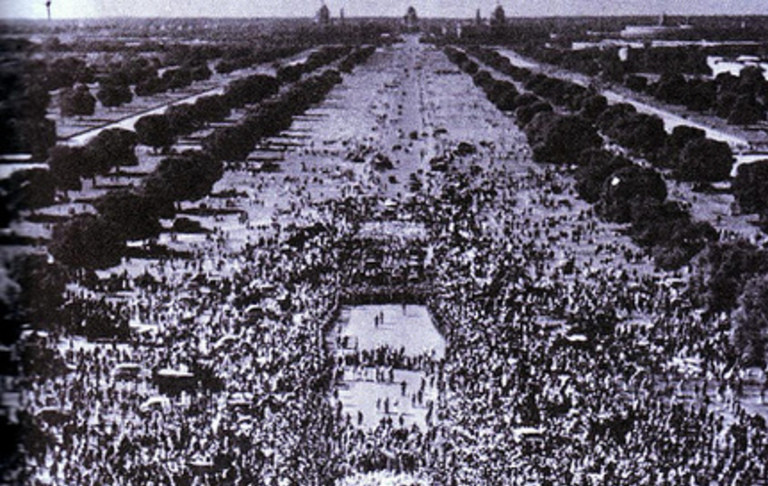

Mahatma Gandhi

Oct 1869 Birth

Mohandas Karamchand Gandhi was born in Porbandar.
May 1883 Marriage

Gandhi gets married to Kasturbai through an arranged marriage.
Sep 1888 Law School

Gandhi leaves for England to study law.
Apr 1893 South Africa

Gandhi goes to South Africa to advise on a lawsuit for a year.
Jul 1907 Satyagraha

Gandhi refuses to register to the Boer Republic Transvaal, which was under control by the British.
Jan 1908 Gandhi goes to Jail

Gandhi gets arrested for refusing to cooperate with the Boer Republic Transvaal and spends two months in prison.
Apr 1919 Amritsar Massacre

British General Dyer commands his troops to slaughter Indians that were peacefully gathered for a festival.
Aug 1920 Nonviolent Resistence
Gandhi calls for a period of noncooperation to the British across India. He is later arrested for sedition and spends approximately 2 years in prison.
Jan 1930 Declaration of Independence

Gandhi published the Declaration of Independence for India from the British.
Mar 1931 Salt March

Gandhi leads people to the sea to collect their own salt because the law forbid Indians to make their own salt and the tax on imported salt was high. About 50,000 people were arrested including Gandhi.
Sep 1932 Fasting

Gandhi fasts in prison for 5 days to try to better the treatment of the "untouchables."
Aug 1942 Indian National Congress

The INC declares that it will only support the British War effort in WWII if they return with Indian independence. Gandhi is again imprisoned.
Jun 1944 Gandhi visits Muhammed Ali Jinnah

Gandhi tries to make an agreement to keep India whole after independence, but is unsuccessful.
Aug 1947 Indian independence

India is officially independent, but is separated into two countries, Pakistan and India.
Sep 1947 Fighting between Hindus and Muslims

Hindus and Muslims cause chaos and murders. Hindus migrate to India and Muslims migrate to Pakistan.
Jan 1948 Gandhi's Death
Gandhi is assassinated by Nathuram Vinayuk Godse, a Hindu nationalist. Nearly a million people attended his funeral.
- Oct 1869 Birth Mohandas Karamchand Gandhi was born in Porbandar.
- May 1883 Marriage Gandhi gets married to Kasturbai through an arranged marriage.
- Sep 1888 Law School Gandhi leaves for England to study law.
- Apr 1893 South Africa Gandhi goes to South Africa to advise on a lawsuit for a year.
- Jul 1907 Satyagraha Gandhi refuses to register to the Boer Republic Transvaal, which was under control by the British.
- Jan 1908 Gandhi goes to Jail Gandhi gets arrested for refusing to cooperate with the Boer Republic Transvaal and spends two months in prison.
- Apr 1919 Amritsar Massacre British General Dyer commands his troops to slaughter Indians that were peacefully gathered for a festival.
- Aug 1920 Nonviolent Resistence Gandhi calls for a period of noncooperation to the British across India. He is later arrested for sedition and spends approximately 2 years in prison.
- Jan 1930 Declaration of Independence Gandhi published the Declaration of Independence for India from the British.
- Mar 1931 Salt March Gandhi leads people to the sea to collect their own salt because the law forbid Indians to make their own salt and the tax on imported salt was high. About 50,000 people were arrested including Gandhi.
- Sep 1932 Fasting Gandhi fasts in prison for 5 days to try to better the treatment of the "untouchables."
- Aug 1942 Indian National Congress The INC declares that it will only support the British War effort in WWII if they return with Indian independence. Gandhi is again imprisoned.
- Jun 1944 Gandhi visits Muhammed Ali Jinnah Gandhi tries to make an agreement to keep India whole after independence, but is unsuccessful.
- Aug 1947 Indian independence India is officially independent, but is separated into two countries, Pakistan and India.
- Sep 1947 Fighting between Hindus and Muslims Hindus and Muslims cause chaos and murders. Hindus migrate to India and Muslims migrate to Pakistan.
- Jan 1948 Gandhi's Death Gandhi is assassinated by Nathuram Vinayuk Godse, a Hindu nationalist. Nearly a million people attended his funeral.